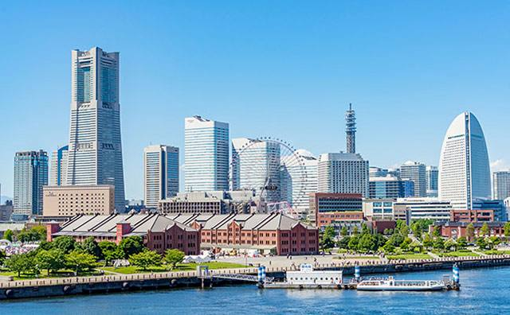
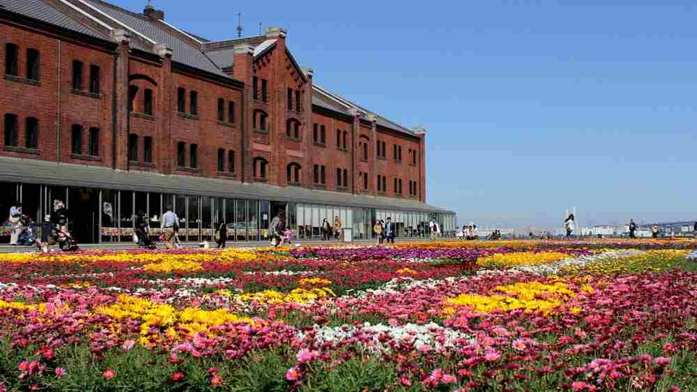
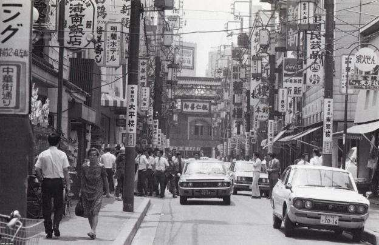

横浜インタビュー 今の横浜の観光地に関する質問5個
質問1
昭和の頃に感じていた“横浜らしさ”と、今の横浜を歩いたときに感じる雰囲気は、どんなところが一番違うと感じますか？

質問2
昭和の横浜で当時よく歩いたエリアと、今の観光地として人気のあるエリアを比べたとき、街の使われ方や人の楽しみ方にどんな変化を感じますか？
質問3
昭和の頃のイベントや季節の楽しみ方と、今の横浜で見られるイベントや季節の楽しみ方を比べると、どんな違いがありますか？

質問4
昭和の横浜で地元の人だけが知っていた“特別なスポット”や“楽しみ方”は、今の観光地と比べるとどんな魅力の違いがありますか？
質問5
昭和に見ていた“横浜らしい景色”と、今の観光地を比べて、残してほしいと思うもの・失われたと感じるものはありますか？
